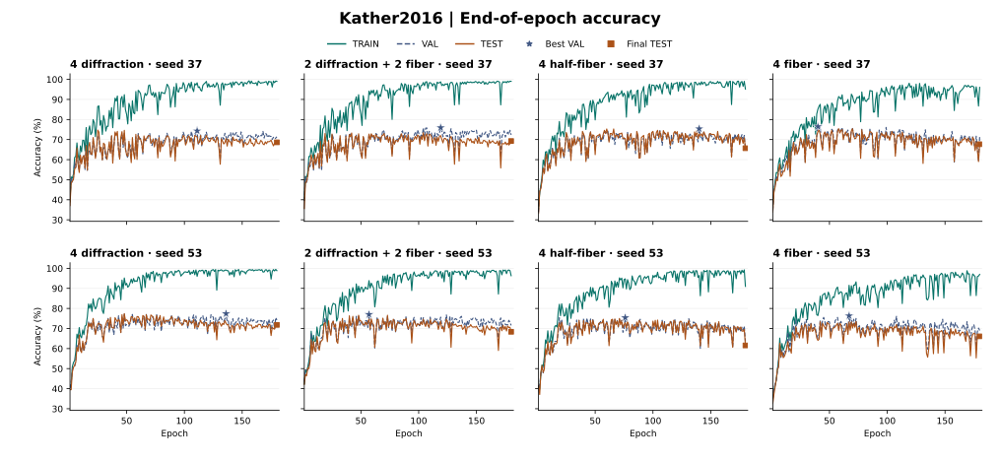
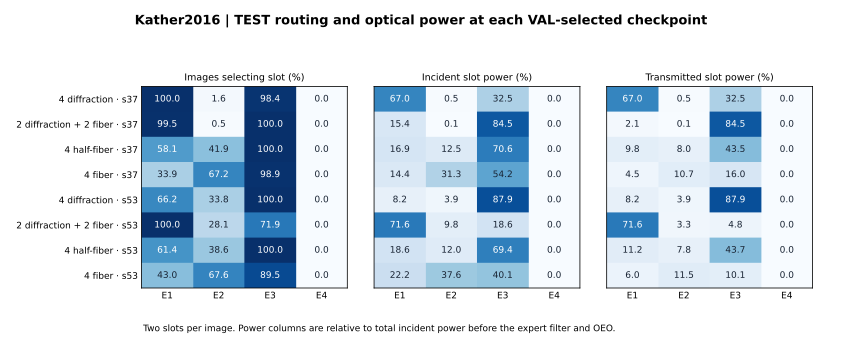
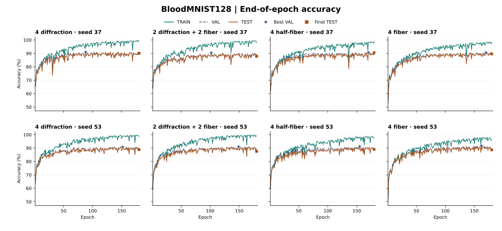
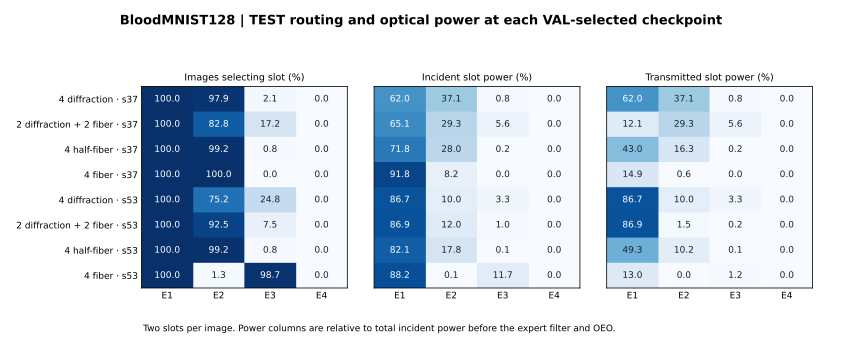

每个数据集使用种子 37 和 53。每种配置均从相同的初始可训练参数开始，记录 180 轮完整训练、验证与测试准确率。最佳权重按 VAL 正确数、VAL 交叉熵和较早轮次依次选择。末轮表格使用同一轮的实际权重。
主要对照将相同的 1,568 个单模通道集中在两个槽（每槽 784 个），或均匀分布到四个槽（每槽 392 个，棋盘格内其余位置直接透射）。两组之外另有四衍射和四光纤对照。
| 配置 | VAL 选模 TRAIN | VAL 选模 VAL | VAL 选模 TEST | E180 TRAIN | E180 VAL | E180 TEST |
|---|---|---|---|---|---|---|
| 四衍射 | 98.70% | 75.86% | 71.94% | 98.93% | 72.81% | 70.21% |
| 两衍射＋两光纤 | 96.31% | 76.46% | 73.27% | 97.67% | 71.94% | 68.82% |
| 四槽各半光纤 | 96.51% | 75.40% | 72.81% | 93.08% | 64.56% | 63.63% |
| 四光纤 | 88.33% | 76.40% | 73.60% | 96.50% | 70.28% | 66.89% |
| 配置差 | 选模 s37 | 选模 s53 | 选模平均 | E180 s37 | E180 s53 | E180 平均 |
|---|---|---|---|---|---|---|
| 两衍射＋两光纤 − 四槽各半光纤 | -0.80 | +1.73 | +0.47 | +3.59 | +6.78 | +5.19 |
| 两衍射＋两光纤 − 四衍射 | +0.66 | +1.99 | +1.33 | +0.66 | -3.46 | -1.40 |
| 两衍射＋两光纤 − 四光纤 | -1.99 | +1.33 | -0.33 | +1.60 | +2.26 | +1.93 |
| 四光纤 − 四衍射 | +2.66 | +0.66 | +1.66 | -0.93 | -5.72 | -3.32 |
| 配置 | 种子 | 最佳轮次 | VAL 选模 TRAIN | VAL 选模 VAL | VAL 选模 TEST | E180 TRAIN | E180 VAL | E180 TEST | E180 VAL 平台规则 |
|---|---|---|---|---|---|---|---|---|---|
| 四衍射 | 37 | 111 | 98.28% | 74.34% | 71.28% | 99.03% | 71.41% | 68.62% | 满足 |
| 两衍射＋两光纤 | 37 | 119 | 98.77% | 75.93% | 71.94% | 99.03% | 72.34% | 69.28% | 未满足 |
| 四槽各半光纤 | 37 | 140 | 98.28% | 75.40% | 72.74% | 95.17% | 65.56% | 65.69% | 未满足 |
| 四光纤 | 37 | 40 | 85.13% | 76.46% | 73.94% | 96.02% | 71.54% | 67.69% | 未满足 |
| 四衍射 | 53 | 136 | 99.11% | 77.39% | 72.61% | 98.83% | 74.20% | 71.81% | 满足 |
| 两衍射＋两光纤 | 53 | 57 | 93.85% | 76.99% | 74.60% | 96.31% | 71.54% | 68.35% | 未满足 |
| 四槽各半光纤 | 53 | 76 | 94.74% | 75.40% | 72.87% | 90.99% | 63.56% | 61.57% | 满足 |
| 四光纤 | 53 | 67 | 91.53% | 76.33% | 73.27% | 96.97% | 69.02% | 66.09% | 未满足 |

每幅图选两个槽，四项入选频率合计为 200%。入射与透过功率均除以专家平面总入射功率，以 OEO 前的复光场计算。混合组在种子 37 用 E1/E4，在种子 53 用 E2/E3。四槽各半组的出射含导模分量和直接透射分量。图中同一行均来自该行的 VAL 选中权重与同一批 TEST 图像。

| 配置 | 种子 | TRAIN 总通光率 | VAL 总通光率 | TEST 总通光率 |
|---|---|---|---|---|
| 四衍射 | 37 | 100.00% | 100.00% | 100.00% |
| 两衍射＋两光纤 | 37 | 86.70% | 86.52% | 86.72% |
| 四槽各半光纤 | 37 | 61.27% | 61.29% | 61.25% |
| 四光纤 | 37 | 31.24% | 31.29% | 31.27% |
| 四衍射 | 53 | 100.00% | 100.00% | 100.00% |
| 两衍射＋两光纤 | 53 | 79.84% | 79.93% | 79.76% |
| 四槽各半光纤 | 53 | 62.73% | 62.74% | 62.70% |
| 四光纤 | 53 | 27.57% | 27.61% | 27.62% |
| 配置 | VAL 选模 TRAIN | VAL 选模 VAL | VAL 选模 TEST | E180 TRAIN | E180 VAL | E180 TEST |
|---|---|---|---|---|---|---|
| 四衍射 | 98.27% | 90.89% | 90.06% | 98.92% | 89.72% | 89.51% |
| 两衍射＋两光纤 | 98.72% | 90.71% | 89.78% | 98.54% | 88.49% | 87.72% |
| 四槽各半光纤 | 98.35% | 90.95% | 90.09% | 98.19% | 89.69% | 89.77% |
| 四光纤 | 97.99% | 91.18% | 90.35% | 97.13% | 89.34% | 89.16% |
| 配置差 | 选模 s37 | 选模 s53 | 选模平均 | E180 s37 | E180 s53 | E180 平均 |
|---|---|---|---|---|---|---|
| 两衍射＋两光纤 − 四槽各半光纤 | -0.79 | +0.18 | -0.31 | -2.66 | -1.43 | -2.05 |
| 两衍射＋两光纤 − 四衍射 | -0.91 | +0.35 | -0.28 | -2.25 | -1.32 | -1.78 |
| 两衍射＋两光纤 − 四光纤 | -0.23 | -0.91 | -0.57 | -1.75 | -1.11 | -1.43 |
| 四光纤 − 四衍射 | -0.67 | +1.26 | +0.29 | -0.50 | -0.20 | -0.35 |
| 配置 | 种子 | 最佳轮次 | VAL 选模 TRAIN | VAL 选模 VAL | VAL 选模 TEST | E180 TRAIN | E180 VAL | E180 TEST | E180 VAL 平台规则 |
|---|---|---|---|---|---|---|---|---|---|
| 四衍射 | 37 | 88 | 97.31% | 90.95% | 90.38% | 99.34% | 90.36% | 90.12% | 满足 |
| 两衍射＋两光纤 | 37 | 102 | 98.07% | 90.36% | 89.48% | 98.18% | 88.43% | 87.87% | 满足 |
| 四槽各半光纤 | 37 | 170 | 98.46% | 90.71% | 90.27% | 98.85% | 90.13% | 90.53% | 满足 |
| 四光纤 | 37 | 170 | 98.01% | 90.60% | 89.71% | 98.13% | 89.31% | 89.62% | 满足 |
| 四衍射 | 53 | 152 | 99.22% | 90.83% | 89.74% | 98.49% | 89.08% | 88.89% | 满足 |
| 两衍射＋两光纤 | 53 | 149 | 99.36% | 91.06% | 90.09% | 98.90% | 88.55% | 87.58% | 满足 |
| 四槽各半光纤 | 53 | 155 | 98.24% | 91.18% | 89.92% | 97.53% | 89.25% | 89.01% | 满足 |
| 四光纤 | 53 | 162 | 97.97% | 91.76% | 91.00% | 96.14% | 89.37% | 88.69% | 满足 |

每幅图选两个槽，四项入选频率合计为 200%。入射与透过功率均除以专家平面总入射功率，以 OEO 前的复光场计算。混合组在种子 37 用 E1/E4，在种子 53 用 E2/E3。四槽各半组的出射含导模分量和直接透射分量。图中同一行均来自该行的 VAL 选中权重与同一批 TEST 图像。

| 配置 | 种子 | TRAIN 总通光率 | VAL 总通光率 | TEST 总通光率 |
|---|---|---|---|---|
| 四衍射 | 37 | 100.00% | 100.00% | 100.00% |
| 两衍射＋两光纤 | 37 | 46.94% | 46.87% | 46.94% |
| 四槽各半光纤 | 37 | 59.51% | 59.51% | 59.51% |
| 四光纤 | 37 | 15.52% | 15.51% | 15.51% |
| 四衍射 | 53 | 100.00% | 100.00% | 100.00% |
| 两衍射＋两光纤 | 53 | 88.60% | 88.60% | 88.58% |
| 四槽各半光纤 | 53 | 59.63% | 59.62% | 59.63% |
| 四光纤 | 53 | 14.22% | 14.22% | 14.22% |
平台判断使用 T24 的三个 VAL 阈值，仅用于描述固定预算末轮。两种子的混合组同时包含初始化和对角布局差异。各配置可训练参数、样本和更新次数匹配，光学秩、透光率与算子成本随配置变化。原 TEST 曾用于 T17 开发。Blood 原划分有 5 个相同像素哈希跨 TRAIN/TEST、1 个跨 VAL/TEST。